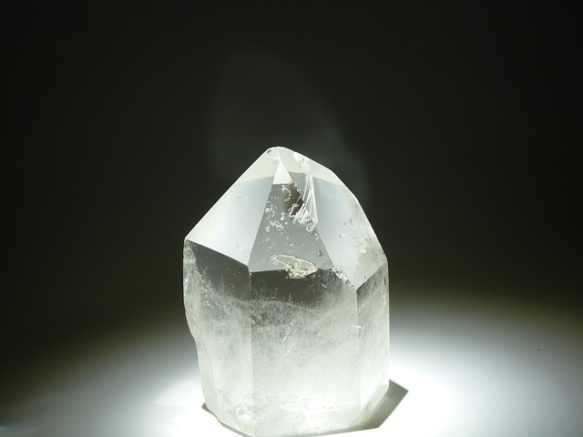
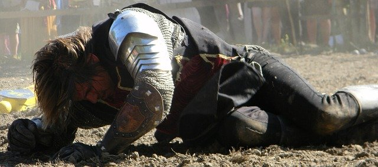
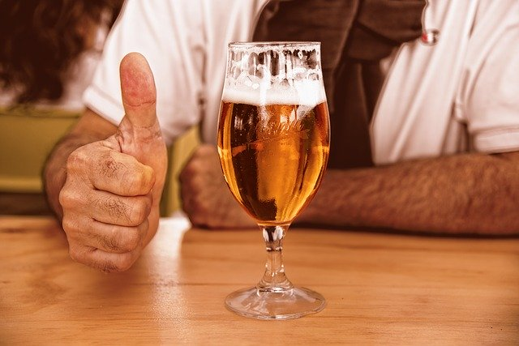

Whiskey Sip'd
As Bartenders we've all had days. Crazy days. Crazy days that have scarred us but are now a point of pride. We call them "Battle Wounds" (because every night we're doing battle against the many faces of evil with ludicrous requests and uninhibited entitlement). These are the days we use to "one-up" each other over endless rounds of Fernet and Jameson proving our rightful places in Bartenders Valhalla.
Being 'Victorious' on one of these battle days will have a different meaning to everyone but with one unifying concept: We got through it.
If you've been in the game (bartended) long enough you've no doubt had many losses and many victories and this is what gives us the temperament to handle any situation. If you've ever heard a GOOD bartender (yes there are bad bartenders that should just stop bartending) complaining about something, it's not because we like to complain, it's because we are being hindered from doing our job to the best of our abilities and we need to record this in our brain ledger so it doesn't happen again.
It's not your fault (as a customer) that someone didn't properly prep lime wedges or make enough backup simple or any of the 250 things that will turn a 2 minute cocktail into a 10 minute cocktail into a frustrated customer into a backed-up line into many infuriated customers into an exasperated bartender into a drunk bartender into an upset manager into a new resume entry for a Craigslist job search. It compounds.
The ice well is a sacred place, the lifeblood of the bar. 99% of customers get something made with ice (personal observation), so it stands to reason that it should be a safe place. Bartenders should revere the ice-well. If you EVER see a bartender scoop ice for your drink WITH THE Glass... Get up. Walk away. I'm sure I'll upset some veteran bartenders but there's no excuse for this. If ANY chips of glass go into the well you MUST "burn" it. That means completely melt or scoop the ice out and fully inspect the well for pieces of glass. Any bartender that is too lazy to use a metal scoop for ice will NOT clean out a dirty well. Please prove me wrong.
Another very important aspect of the well is the cold stone. This mechanism sits at the bottom of the well and chills the soda lines that run through it. When the well is full of ice that soda's cold.
I was bartending during July 4th on San Francisco's Wharf (no need to name the bar) during the summer of 2011. Some of you have been to The Wharf during 4th of July and can understand the hordes of people that wash through there; we're talking thirty-thousands or so. I was working solo that day for reasons only known to the inexperienced young folks staffed as "Management". That means I was handling customers sitting at my bar, drink tickets for the servers and ALL of the to-go orders. For 13 hours I was a rock star.
It goes without saying that I was entitled to a short lunch break during hour 8 of my shift. The procedure was for a manager to step in for bartenders during breaks to prevent interruption of service for the guests.
After 30 minutes of stuffing my face to the gills with jambalaya and staring out at the peaceful bay I came back to this scene...
My young and inexperienced manager was scooping buckets of ice from the well with a LARGE METAL BUCKET. The kind you'd find holding an 18 pack of corona nestled in ice.
She had broken a glass into the well and was doing the responsible thing by burning the ice coupled with the irresponsible thing of scooping the ice out with a big cumbersome bucket. I yelled out to her, "Don't use that bucket!!", to which she responded, "Why not? It's fine!", but it was too late. The sharp forceful metal bucket had clipped one of the soda lines and begun spraying EVERYWHERE. All over her, all over me and more importantly, all over the customers at the bar!
What she did next was pitiful: She left. She said "Well, you're back from break I'm leaving". Grabbed her car keys and left. There I am with a nearly empty and exceedingly hazardous well, some sticky liquid spraying all over the place and people STILL filing in.
I kept my calm. I broke it down into 2 objectives: 1) Stop the line from spraying everywhere
2) Make sure the customers are OK
After taking a lengthy, controlled, centering breath, I was able to shove the broken line temporarily back into the hub it broke off from mitigating the soda geyser. I then turned the gas off cutting the pressure to the soda line all together.
We ended up bringing in big plastic buckets to fill with all the soda from our upstairs bar. Mad classy yup.
I started with the people that were already eating food at the bar by saying something like "Alright, now that we've all had a refreshing spritz who here needs glass removed from their crab cakes??" in a confident yet apologetic tone. This made people sympathetic to my predicament while knowing that I was here to take charge and make sure everyone was taken care of in spite of the situation. Everyone ended up having a great time and gave me great kudos for handling the situation (literally like a boss) and we all went outside together to watch the great foggy SF fireworks show.
Our objective as Service-Folk should be providing people with the best possible experience allowing them to escape their tedious lives for a flash. That could mean leaving someone alone to enjoy their $30 pour of Scotch or chatting with someone for a few hours and learning about their Grandkids. Being able to discern which tactic to use comes mainly with experience and will become second nature with time.
Leave us an interesting story in the comments about a shift gone right/wrong!

Cocktails